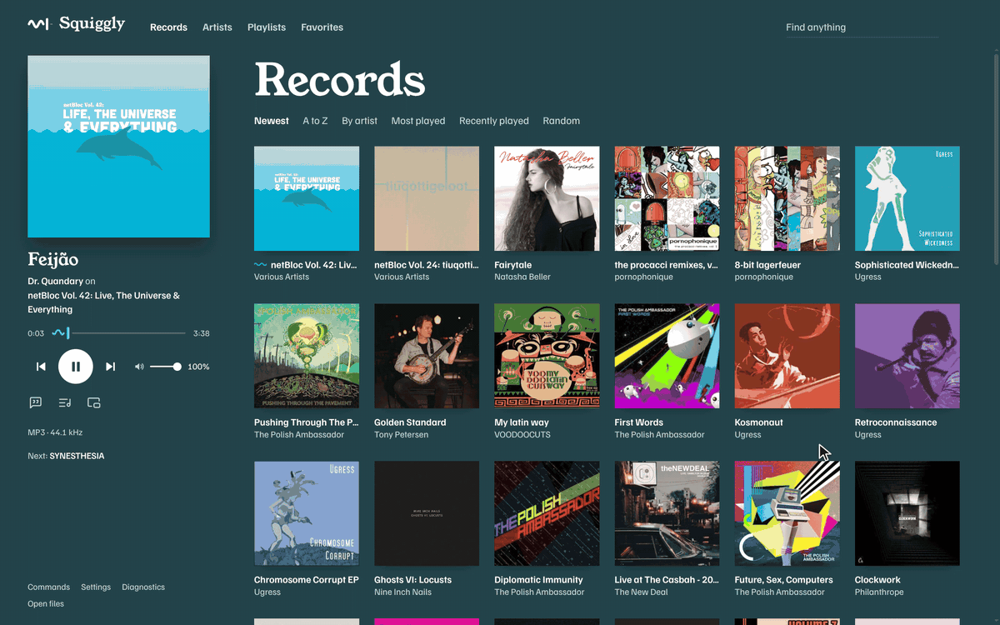
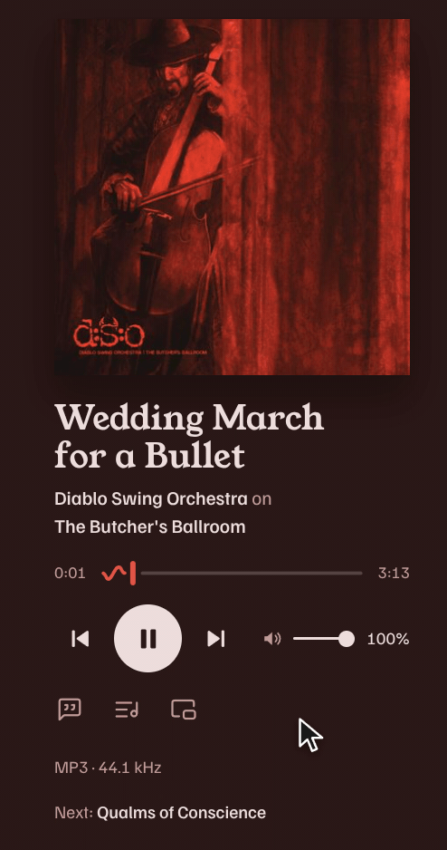
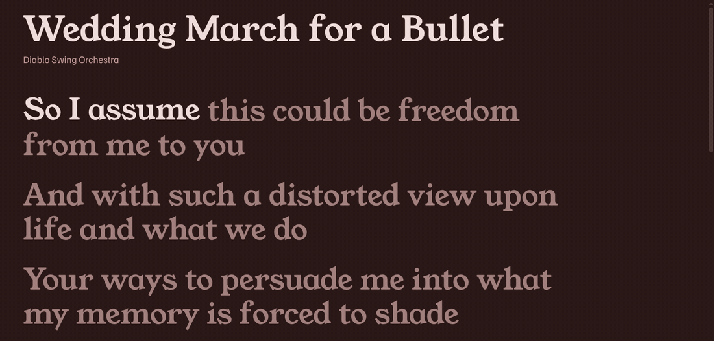
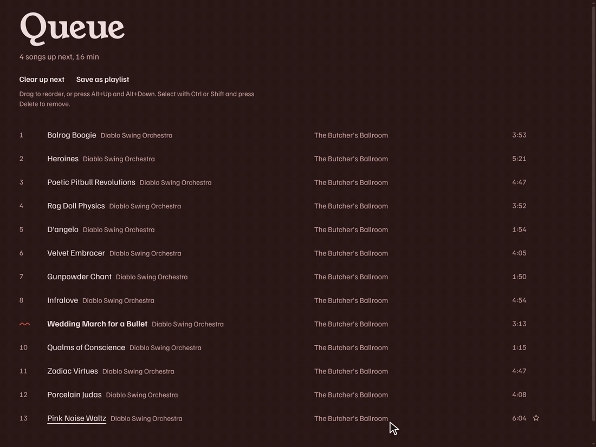
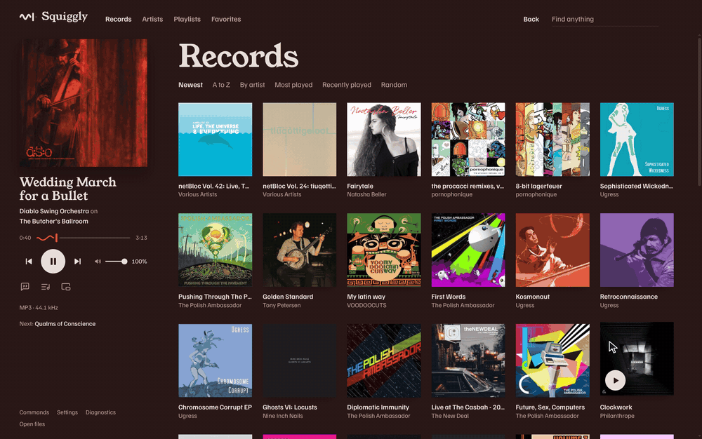
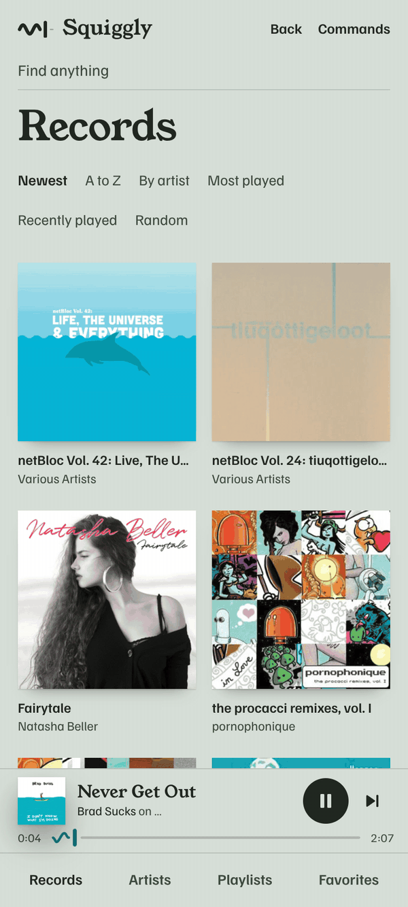

Plays your records. Leaves the signal alone.
A music player for your Navidrome server, on Windows, Fedora, and Android.
Download for Windows Download for Fedora Download for Android
Version 0.2.0, open source. No server? Try Navidrome's demo, user demo, password demo.

The sound, untouched.
No EQ, crossfade, or loudness levelling. Turn the volume down and it tells you.


Lyrics, word by word.
Synced lyrics from your server, or from LRCLIB if you turn it on.
The queue follows you.
It's saved on your server, so it's waiting on every device.


Every action, one keystroke away.
Ctrl+K finds any command. Keys, themes, and extensions are files you can edit.
On your phone too.
The Android app plays with the screen off. A browser version works on any phone.

Download
Download for Windows Download for Fedora Download for Android
Windows 10/11, Fedora, and Android 7 or later.
- Windows portable
- x64, nothing to install
- Fedora RPM
- x86_64, pulls in mpv-libs
- Android APK
- Android 7 or later
- SHA256SUMS
sha256sum --ignore-missing -c SHA256SUMS
- The builds aren't signed yet, so Windows warns you: choose More info, then Run anyway.
- The installed Windows app updates itself.